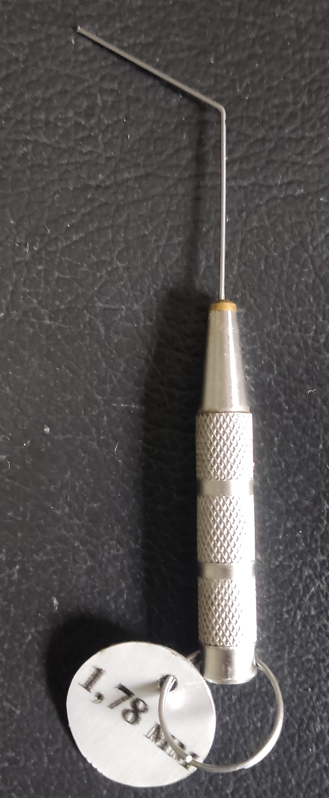
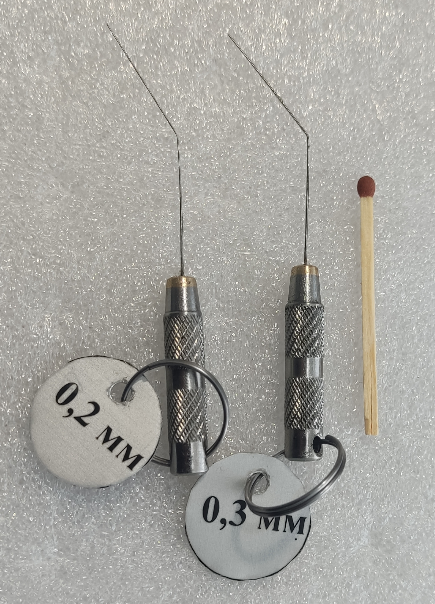
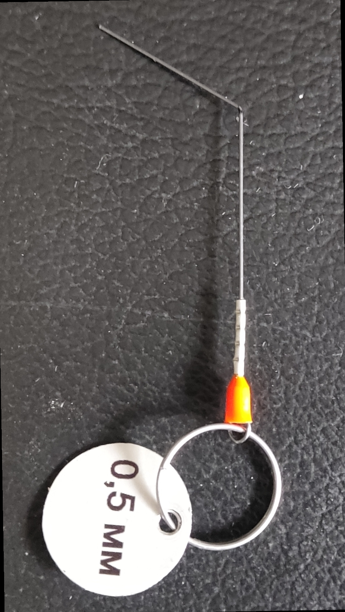

Для перехода щелкните по ссылке на желтом фоне:
ЩУПЫ КРУГЛЫЕ "ИНТЕРБАЛТ" ТИП 4 (изогнутые с ручкой)
Щупы круглые "ИнтерБалт" тип 4 выпускаются в трех исполнениях:
- исполнение 4.1 - Диаметр ручки 8 мм, длина ручки 50 мм (ручка тип 1);
- исполнение 4.2 - Диаметр ручки 6 мм, длина ручки 30 мм (ручка тип 2);
- исполнение 4.3 - Пластмассовая ручка.
 |
 |
 |
| Щуп круглый тип 4.1 | Щуп круглый тип 4.2 | Щуп круглый тип 4.3. |
Щупы круглые «ИнтерБалт» тип предназначены для контроля (или регулировки) зазоров между сопрягаемыми криволинейными поверхностями (между профилем колеса и рабочей поверхностью шаблона, между закаточными роликами в консервной промышленности, между фильерой и жилой провода при нанесении изоляции на провод методом экструзии, при ремонте автомобилей, при регулировке зазоров между контактами электрических аппаратов и т. п.).
Щупы круглые "ИнтерБалт" могут использоваться совместно со щупами
плоскими в местах, где это позволяет форма криволинейных поверхностей и
габариты рабочей зоны в месте замера.
Пример: Требуется проконтролировать зазор 2,95 мм.
- Можно применить щуп круглый "ИнтерБалт" диаметром 2,5 мм и набор плоских щупов толщиной 0,45 мм;
- Можно применить щуп круглый "ИнтерБалт" диаметром 2,4 мм и набор плоских щупов толщиной 0,55 мм и т. д.
Щупы круглые "ИнтерБалт" тип 4 выпускаются следующих диаметров и с допусками:
- Диаметры производимых щупов, мм:
- Диаметр 0,2; - Допускаемые отклонения диаметра от номинального: (+0,02 -0,02 ) мм.
- Диаметры 0,3; 0,4; 0,5; 0,6; 0,7; 0,8; 0,9;
1,0; 1,1; 1,2; 1,3; 1,4; 1,5; 1,6;
1,7; 1,78
- Допускаемые отклонения диаметра от номинального: (+0,01
-0,02
) мм,
- Диаметры 2,0; 2,2; 2,3; 2,4; 2,5; 2,8; 3,0 - Допускаемые отклонения диаметра от номинального: (+0,01 -0,03 ) мм
Щупы круглые «ИнтерБалт» тип 4 выпускаются длиной:
- диаметр щупа от 0,2 до 0,3 мм - длина рабочей части (L)* до 20 мм, длина нерабочей части (L1) от 10 до 30 мм;
- диаметр щупа свыше 0,3 мм до 3,0 мм - длина рабочей части (L)* от 10 до 100 мм, длина нерабочей части (L1) от 20 до 120 мм.
- Длина рабочей части L (от конца щупа и не доходя на расстояние
"k" мм до начала закругления изгиба. Расстояние "k" - расстояние
от конца радиуса
изгиба (по меньшему радиусу) и до начала
рабочей части щупа:
- для щупов диаметром от 0,2 до 0,6 мм k = 1 мм;
- для щупов диаметром свыше 0,6 до 3,0 мм k = 3 мм.
- Угол изгиба щупа (45 ... 180) градусов.
Маркировка при заказе: Щуп круглый "ИнтерБалт", тип 4.3, диам. 1,0
мм, 50 х 100 х 90; где
- 1,0 - диаметр щупа, мм;
- 50 - длина рабочей части, мм;
- 100 - длина нерабочей части, мм;
- 30 - угол между рабочей и нерабочей частями (угол загиба) в градусах.
Скачать Руководство по эксплуатации на щупы круглые "ИнтерБалт" тип 4.
Ваши замечания, предложения и пожелания по щупам круглым Вы можете отправить на электронную почту interbalt39@gmail.com.
Для перехода щелкните по ссылке на желтом фоне: